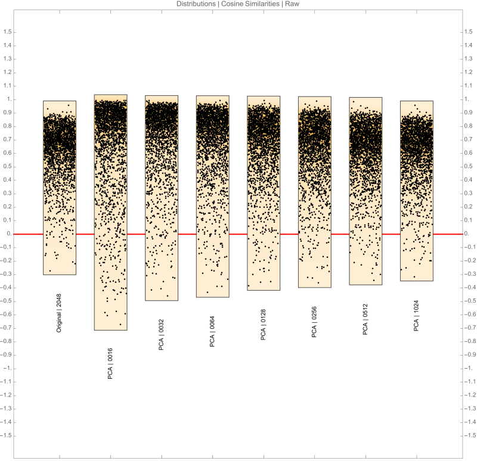
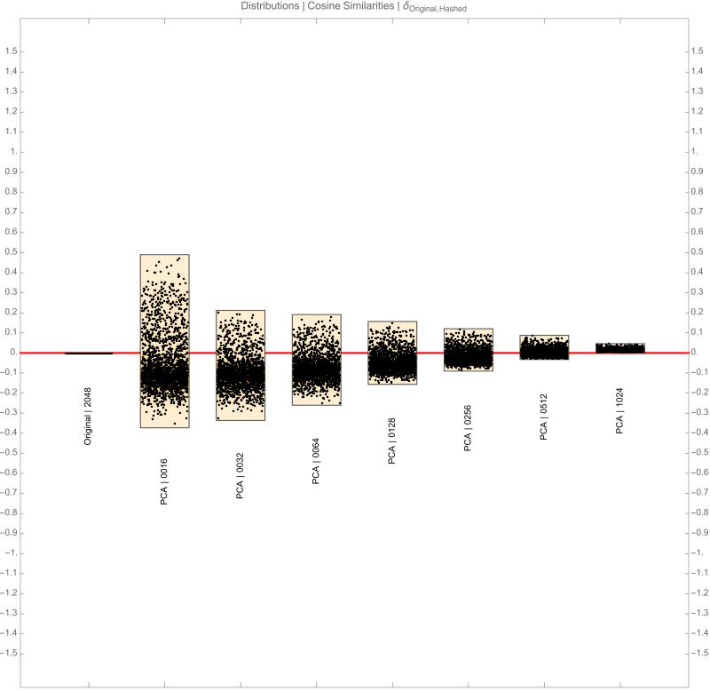
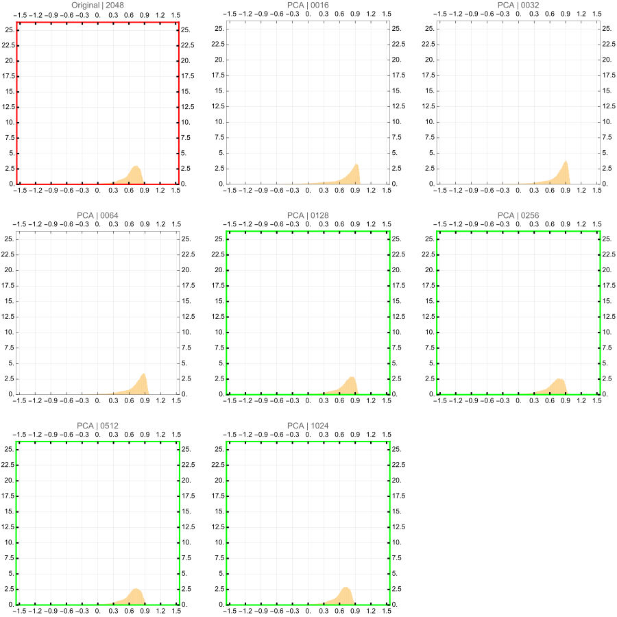
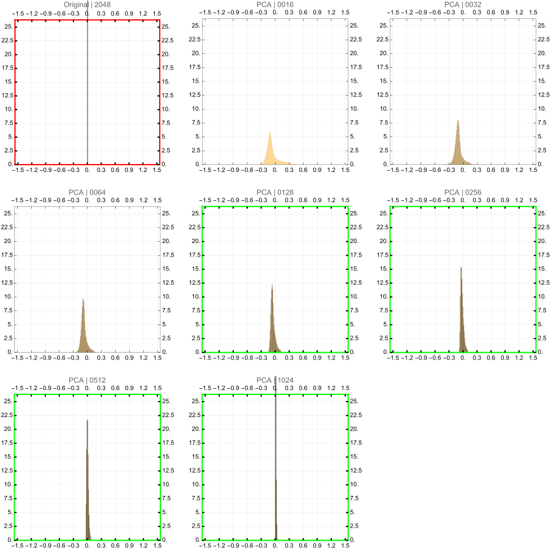
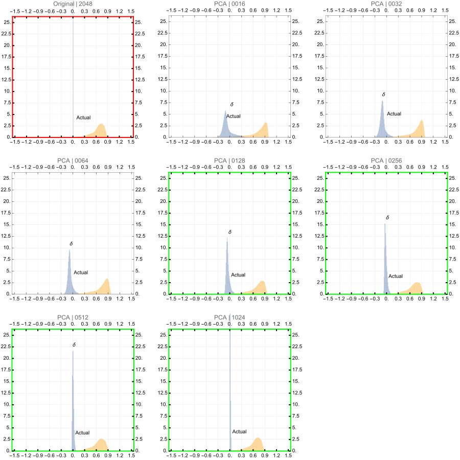

Scenario
- Principal component analysis is a concept developed using techniques form Linear Algebra
- This technique is widely used in Statistics and Sciences to map the higher dimensional data into a lower
dimensional data while retaining as much as variance for the respective features as possible.
- Dimensionality reduction makes usage of large data structures such as embeddings from foundation
models. Let us explore the algorithm here.
Algorithm
Sources
Original Vectors sourced from the model deepseek-coder-1.3b-base
model_name = "deepseek-ai/deepseek-coder-1.3b-base"
tokenizer = AutoTokenizer.from_pretrained(model_name)
model = AutoModelForCausalLM.from_pretrained(model_name)
print(f"DeepSeek-Coder model '{model_name}' and tokenizer loaded.")
Top 512 words of the english language have been encoded using the model above
How to determine the best candidate?
- Calculate all combinations pairwise similarities for a subset of the vectors. This exercise samples 1024
vectors
- Pick a ballpark output dimension size
- Experiment with the available algorithms and various output dimensions
- Calculate the similarities in the lower dimensional space
- Subtract the corresponding similarities pairs of higher and lower dimensions
- Plot the distributions
- Pick the method with a distribution centered normally with a mean closest to 0 and with the least
variance
Keys
There are several abbreviations here and the guide below will help with the reading
- Original | 2048 \(\rightarrow\) Raw vectors from the deepseek-coder-1.3b-base model
- PCA | 0016\(\rightarrow\) Principal Component Analysis to hash vectors to dimensions 0016
- PCA | 0128\(\rightarrow\) Principal Component Analysis to hash vectors to dimensions 0128
Observations
From the distributions below, we can observe the following in the similarity space.
Victors?
Distribution Charts


1. Base Distributions in Cosine Similarity Space

2. Difference distributions in Cosine Similarity Space
These are obtained by subtracting pairwise cosine similarities between the original and reduced
dimensions. For example, a given data point would be \(a_{2048} - a_{PCA\ 0064}\) where \(a_{2048}\) is the
cosine similarity between a pair of words and \(a_{PCA\ 0064}\) is the cosine similarity between the exact
same words but with the vectors obtained from the PCA projector having output dimensions of 64. Each
distribution is made up of nearly 130,000 datapoints.

3. Base and Difference distributions in Cosine Similarity Space
